In the last chapter you learned how to write
procedures and functions. In this chapter you learned how to
use the if statement and how to write for
loops.
In this section, we want to marry those two concepts together,
and learn how to write predicate (or logical) functions,
and functions that process Strings using the
for loop. These are similar to the problems
you'll see on your CS 170 programming proficiency quizzes.
We'll start by looking at the concept of selection in the context of writing your own functions.
Functions and Selection
With procedures, it really doesn't matter (syntactically) if you
always have two alternatives. If you use a simple if
statement, then when the condition is true, the
actions in the body of the statement are executed; when the
condition is false then nothing happens.
With a function, though, it's possible to have a return
statement inside of an if statement. If you do that,
though, you have to return a value in each and every case:
when your condition is true and when
your condition is false. That means that functions
using if can have several different
return statements, as long as every single
branch leads to a return.
Let's look at a simple example.
The isOdd() Function
You can tell if an integer is odd by using the remainder
operator. If the remainder of the number divided by 2 is 1,
then the number is odd. We can put that algorithm
into a function like this:
 Notice that:
Notice that:
isOdd()is a predicate function. That is, it has abooleanreturn type.- The function has one parameter,
nwhich is the number to test. - If the remainder of the number divided by 2 is 1, we
return
true, just like we said.
So why is the compiler complaining?
The answer is very simple, yet it is one that students frequently
struggle with. A function must return a value for each and
every path through the code. This function returns a value
when the number n is odd. What does it do when the number is
even?
Nothing!
Three Solutions
There are several different ways to fix this problem. The
way that we've been doing it in class (and the classical
solution), is to create a result variable
at the top of your function, modify result
as necessary inside your if statement,
and then return result at the very
end of your function. That way you only have one exit
from your function.
If you want to skip the result variable and
use the multiple-return style, then here are three
solutions that will work:
- You can add an
elseclause for the case when the number is even like this:
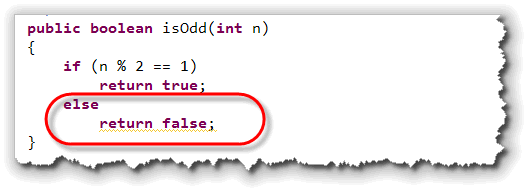
- Since the
returnstatement ends the function when the number is odd (inside theifstatement body), any code following it is only executed when the number is even. That means you really don't need anelse; you can just write this:

Boolean Return Values
The third alternative is a little harder to explain, but you
should make the effort to understand it. Often, the best
way to implement a predicate function is to avoid using
if statements at all, and simply return the
result of the Boolean expression. Let me explain how that
works.
Assume that we take the test expression inside the if
statement, and store it inside a boolean variable.
Once we do that, the variable (result) will
contain true if the number is odd and false
if the number is even.
Then, we can simply return that boolean variable,
instead of the literal values, true or false,
like this:
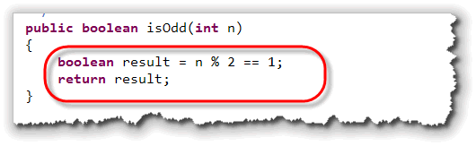
Of course, we really don't need the variable result,
do we? Instead, we can just return the Boolean expression
result like this:
 This is a fairly standard way to write a predicate function.
This is a fairly standard way to write a predicate function.
Hands On Logic Problems
Now it's your turn. Let's write some functions that
make decisions using the if statement.
You'll find the documentation for the
selection functions you need to write in LogicProblems.java,
which you'll find in this chapter's code folder:
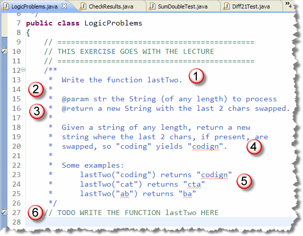
Just like the functions you worked on earlier, this problem:- Tells you the name of the function you need
to write; in this case,
lastTwo. - Tells you the name and type of each parameter.
This function has only one
Stringparameter, namedstr. - Tells you what kind of value the function is going
to return. This function returns a new
String.
As with the other examples you've seen, there is also a narrative explanation, and a few examples, but you really don't need that to get started, do you?
Before Everything: Write a Skeleton
At this point, without knowing anything else, you can write
a syntactically correct function, that compiles and can be
tested. Add your code at the section marked 6 in the previous
picture:
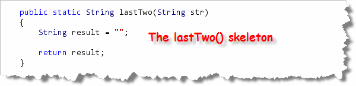
Notice how we can write the header by knowing the return type, name and parameters. We write the "skeleton" body by:- Creating a
resultvariable of the same type as the function return type and initializing it to some value. (Usuallyfalse,0or the emptyString, depending on the function type.) - Returning the
resultat the end of the function.
Note that you don't have to use the static keyword on
your functions. You don't need it if all of your testing is
going to be with the DrJava Check program. If you want to add
a main() method and call your function
from that main() method, then you will need
to add the static keyword. Check
will work fine either way.
Once this is done, you can run the Check program to
test the function. You'll see it passes at least one of the tests,
but fails all the others.
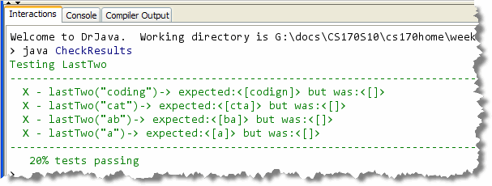
To complete the problem, you'll need to go back to the problem description and use some logic to actually solve the problem.Handle the Normal Logic
Rather than thinking about the exceptional situations, try to
figure out how to solve the "normal" situation. What steps would
you need to perform, for instance, if every input String
was guaranteed to be at least two characters long?
Well, that's pretty straightforward. Here's some code that
does it:

- First, find out how long the input
Stringis and store that in a variable. We can use theString length()function for that. - Next, use the
substring()method, along with the length to grab the front part of the input string; everything except for the last two characters. - To grab the last two characters, we can use the
String charAt()method and store the results in another pair of variables:charvariables this time. (Remember that the last character is at position length - 1 and the next-to-last character will be at length - 2). - Finally, we can put everything together by using concatenation, simply reordering the last and next-to-last characters when the result is reassembled.
When we run the tests this time, you'll see that all of them
pass except two. As you can see from the picture, these are the
tests where the input String is less than two
characters long:
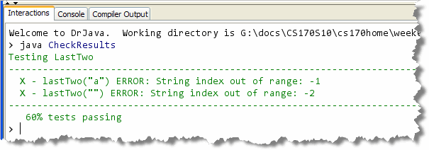
This is where we need theif statement.
Handling Unusual Input
Since the failed tests only occur when the length of the
input String is less than two, we can add an
if-else statement to only perform the normal
processing when the input has adequate characters. If the
input String is too short, we'll just set
result equal to the original input.
Here's the completed lastTwo() function that
implements these changes:
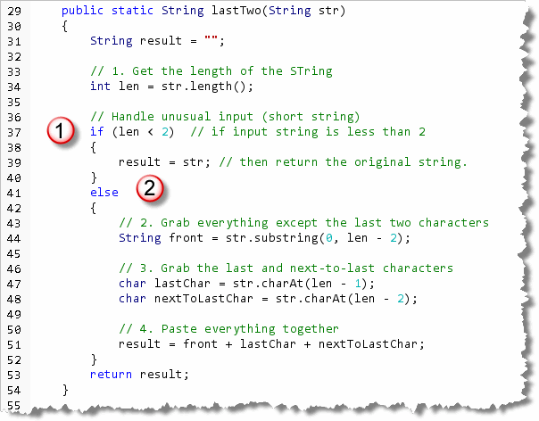
Loops and Functions
Now let's get some practice using the
for loop to solve String problems.
To do that, open LoopProblems.java in DrJava.
Once you have it open,
scroll down and find the doubleChar problem:
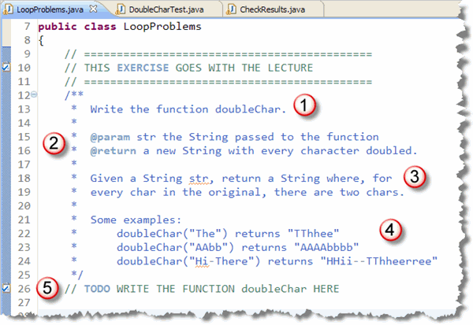
As before you have:- The name of the function you need to write.
- The Javadoc parameters and return type.
- A short "problem statement".
- Some examples.
- A comment you should replace with the actual function.
Before you start typing, though, let's take a look at some basic strategy. You'll normally want to attack these kinds of problems using the same basic strategy. Here's how I do that.
Step 1: Skeleton and Return Type
Even though all of these simple loop problems process
Strings, they don't necessarily return
String values. Some will, but others will return
int or boolean values.
My first step (after I've written the header, of course), is to
always to create an "empty" variable of the
correct type and then add a return statement, so that I can
run the program and see what the tests do. Here's what you'd
do for doubleChar():

Step 2: Loop through the String
These problems all require the use of loops.
Because you can easily find the length of the String,
you'll almost always use the for loop. Here's the
general pattern that I follow, even before I give any thought
to what my code is actually going to do:

Step 3: What's the Goal?
Now we're ready to look at what the output should be. In this case, we want our output to contain two characters for each character in input.
In general, if you want to examine every character, you can do it like this:
char ch = str.charAt(i);
or, you can do it like this:
String chStr = str.subString(i, i + 1);
The first technique gives you back a char
variable which is easy to compare using the various
relational operators. You'll have to use the second
technique if you need to process more than one character
on each repetition.
In this case, we can go either way. We need to grab each
character and then "paste" that character onto the output
String two times to double it. Here's a version
using charAt():
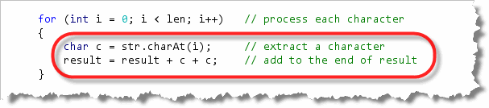
Notice that you need to concatenate the characters with the
String output, not add the two characters
together and concatenate that. Concatenation works with
Strings, not characters. If you were to
write this:
result += c + c;
then the two characters would be added as Unicode characters and
the resulting numeric value would be pasted onto the
end of your String.
Here's a version of the same loop, using the substring()
method instead of charAt():
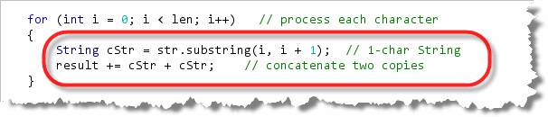
Note that because the variablecStr is a String
rather than a char, you can use the shorthand
assignment operator in this instance.
A Second Example
Let's look at a second example, just to make sure you have the
idea. Scroll down until you find the problem named
countHi. For this, all you need to do is count the number of times
that the word "hi" appears in the given String.
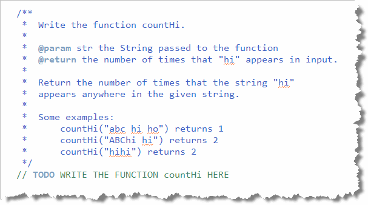
The first step is exactly like the previous problem. Because the
return type of this function is int, I create a
numeric variable (instead of a String), and return that:
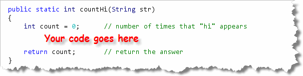
The second step is very similar to last problem, but has a
little twist that you need to pay attention to. In the
first problem, our loop visited each character
in the String.
In this problem, we are looking for
a two-character wide String, so we can't
loop through the entire String, because we
will be examining (or "extracting") two characters at a time, instead of only
one. If we looped through the entire String, then
when we got to the last character, and then tried to get a
substring consisting of the next two characters, the
program would generate an "out of bounds" runtime error.
In general, if was intend to extract or examine n
characters, then our loop should go from 0 to len - (n - 1)
like I've done here:
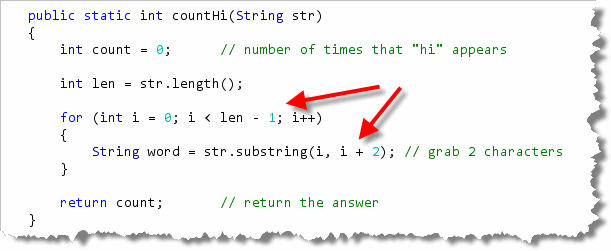
Note also, that thesubstring extraction code
always looks like str.substring(i, i + n)
where n is the number of characters for the resulting
substring, and the loop condition always looks like
i < len - (n - 1). In this case, since we want to get
two characters, "n" is 2 and the loop condition is i < len - 1.
Finally, to compare the extracted substring with the literal
value "hi", you need to use the equals() method.
If equals() returns true, then you'll
increment your counter. Here's what the final loop
looks like:
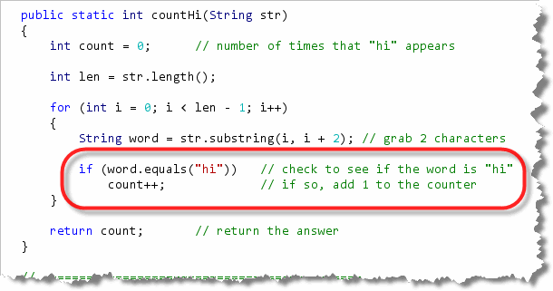